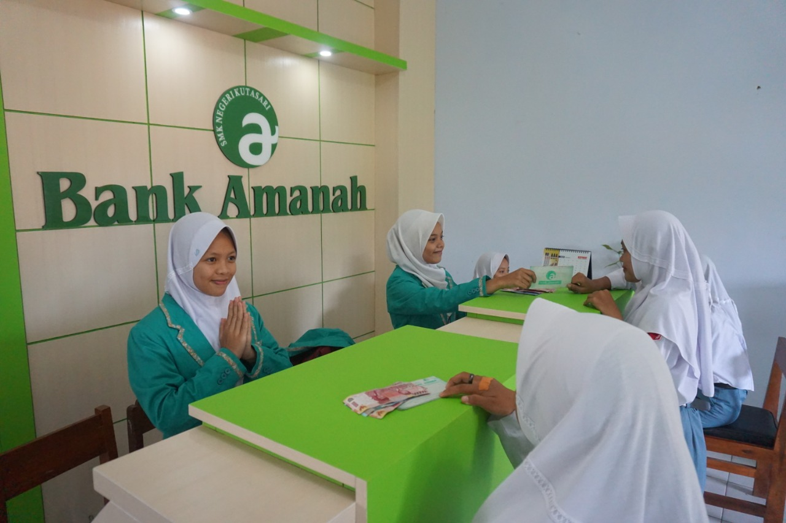

Akuntansi
Akuntansi merupakan salah satu program keahlian di SMK Negeri 1 Kutasari dengan izin operasional dari Dinas Pendidikan Purbalingga No.421.5/1649.1/2012. Program keahlian Akuntansi memiliki Akreditasi A.

Visi Akuntansi
Menghasilkan lulusan /tenaga akuntansi tingkat menengah yang terampil, disiplin, tanggung jawab, dan berakhlak mulia yang sesuai dengan tuntutan dunia usaha / dunia industri.
Misi Akuntansi
Bisnis dan Manajemen
Mendidik siswa dalam bidang bisnis dan manajemen khususnya keahlian Akuntansi agar dapat bekerja dengan baik dan mandiri.
Karir Profesional
Mendidik siswa agar mampu memilih karir, berkompetensi, dan mengembangkan sikap professional.
Tujuan Program Keahlian
Menghasilkan lulusan untuk menjadi tenaga akuntansi tingkat menengah yang terampil, disiplin, tanggung jawab, dan berakhlak mulia.
Menghasilkan lulusan yang dapat menerapkan pola hidup sehat, memiliki wawasan pengetahuan dan seni.
Menyiapkan peserta didik dengan keahlian dan keterampilan dalam bidang keahlian Akuntansi agar dapat bekerja, baik secara mandiri atau mengisi lowongan pekerjaan yang ada sebagai tenaga kerja tingkat menengah.
Mendidik peserta diklat agar mampu memilih karir, berkompetisi, dan mengembangkan sikap profesional dalam bidang Keahlian Akuntansi.
Membekali peserta diklat dengan ilmu pengetahuan dan keterampilan sebagai bekal bagi peserta didik yang berminat melanjutkan pendidikan ke jenjang pendidikan yang lebih tinggi.
Kompetensi yang Dipelajari
Peserta didik dibekali berbagai kompetensi akuntansi sesuai dengan bidang keahlian.
Menerapkan prinsip profesional kerja
Melaksanakan komunikasi bisnis
Menerapkan Keselamatan, Kesehatan Kerja dan Lingkungan Hidup (K3LH)
Mengelola dokumen transaksi
Memproses entri jurnal
Memproses buku besar
Menyusun laporan keuangan perusahaan jasa
Menyusun laporan keuangan perusahaan dagang
Memproses dokumen dana kas kecil
Memproses dokumen dana kas bank
Mengelola kartu piutang
Mengelola kartu persediaan
Mengelola kartu aktiva tetap
Mengelola kartu utang
Menyiapkan SPT
Mengoperasikan paket program pengolah angka
Menyajikan laporan harga pokok produk
Menyusun laporan keuangan manufaktur
Mengoperasikan aplikasi computer akuntansi
Akuntansi perbankan
Akuntansi
Program keahlian Akuntansi membekali peserta didik dengan pengetahuan dan keterampilan dalam bidang akuntansi, mulai dari pengelolaan dokumen transaksi, jurnal, buku besar, laporan keuangan, hingga penggunaan aplikasi komputer akuntansi.
AKUNTANSI
Kompetensi Keahlian